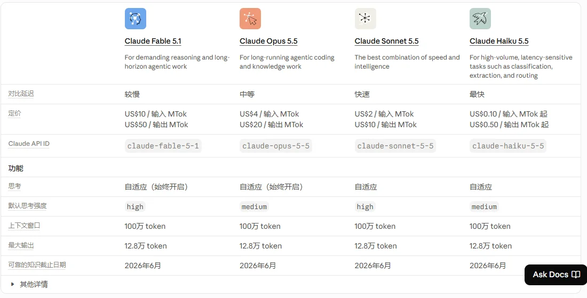

AnthropicAnthropic PBC
以企业和编程为核心的模型厂商：年化收入一年增长约 7 倍到 650 亿美元，Claude Code 与 Cowork 拉动企业采购；10 月递交上市招股书，所有现役模型都支持 100 万 token 上下文。
一页结论
- 增长最快的头部厂商：年化收入 2026 年 5 月超过 470 亿美元、7 月底达到 650 亿美元，约为一年前的 7 倍；二季度收入约 115 亿美元S3
- 收入高度企业化：年消费 10 万美元以上的客户超过 11,900 家，100 万美元以上超过 1,900 家，1,000 万美元以上约 250 家；按量计费收入占上半年 80%S5
- 模型四档，全部 100 万上下文：Fable 5.1（输入 $10 / 输出 $50）、Opus 5.5（$4 / $20）、Sonnet 5.5（$2 / $10）、Haiku 5.5（$0.1 / $0.5），最大输出均为 12.8 万 tokenS1S2
- 应用拉动平台：Claude Code 成为职业开发者使用率最高的编程工具，Cowork 进入办公场景；同时使用平台与自家应用的大客户比例一年内从约 30% 升到过半S6S5
- 不开放权重：在本系列 11 家中，是唯一未发布任何开放权重模型的厂商S7
01公司介绍
02公司战略
Anthropic 的打法是“专注企业与编程，用应用拉动平台消费”。
- 企业优先：收入主要来自 API 与企业订阅，大客户数量快速增长S5
- 编程作为突破口：Claude Code 让开发者成为企业采购的推动者；使用 Claude Code 的大客户消费显著更高S5S6
- 多云分发：模型同时上架 Amazon Bedrock、Google Cloud、Microsoft Foundry 和 Claude Platform on AWSS2
- 分散算力来源：AWS、Google TPU、Azure、AMD、xAI Colossus 等多家供给S7
- 安全与评估：引入 Accenture 作为首家嵌入式独立评估方S7
03模型矩阵与定位
| 模型 | 定位 | 输入 | 输出 | 上下文 / 最大输出 |
|---|---|---|---|---|
| Claude Fable 5.1 | 高难度推理与长时 Agent 任务 | $10 | $50 | 100 万 / 12.8 万 |
| Claude Opus 5.5 | 长时间编程与知识工作（官方推荐的默认选择） | $4 | $20 | 100 万 / 12.8 万 |
| Claude Sonnet 5.5 | 速度与智能的最佳平衡 | $2 | $10 | 100 万 / 12.8 万 |
| Claude Haiku 5.5 | 高量、低延迟任务；超过 10 万 token 的提示按 $0.5 / $2.5 计 | $0.10 | $0.50 | 100 万 / 12.8 万 |
| Claude Mythos 5.1 | 限量提供 | $10 | $50 | — |
价格单位：美元 / 百万 token。批量接口 5 折。来源：S1S2

04产品与 Agent 布局
应用层
Claude（对话与 Cowork 合一）Claude CodeClaude Tag（Slack）Claude in ChromeOffice 插件与行业插件
开发者平台
Messages APIManaged AgentsAgent SDKMCP 协议
模型层
Fable 5.1 / Opus 5.5 / Sonnet 5.5 / Haiku 5.5Mythos 5.1（限量）
算力层
AWS（主要云服务商）Google TPUAzure、AMD、xAI Colossus 等
渠道Claude 订阅企业销售Amazon BedrockGoogle CloudMicrosoft Foundry
Claude Code 与 Claude Cowork 的详细分析见《编程与办公智能体》系列。
05开放权重
| 项目 | 现状 |
|---|---|
| 开放权重模型 | 无，Hugging Face 上没有 Anthropic 发布的模型S8 |
| 开放标准 | 主导 MCP（模型上下文协议），被行业广泛采用 |
06商业模式
| 收入来源 | 说明 |
|---|---|
| 按量计费 | API 调用与自家应用的计量用量，占 2026 上半年收入 80%S5 |
| 订阅 | Pro $20、Max $100、Ultra $200；Team 与 Enterprise 按席位S9 |
| 云伙伴 | Bedrock、Google Cloud、Foundry 上的销售按全额计入收入S3 |
客户集中度：前五大客户约占前三季度收入 25%，没有单一客户超过 10%；截至 9 月 30 日净收入留存率约 900%S5。
07上下游与渠道
上游：芯片与算力
AWS（主要云服务商）Google：最多 100 万片 TPUAzure：300 亿美元 Nvidia 系统AMD：最多 2GW MI450xAI Colossus 1Akamai、TeraWulf、Nscale 等数据中心S7
Anthropic
模型研发、Claude 应用、API
渠道
生态伙伴
Accenture、KPMG 等咨询伙伴Cursor 等使用 Claude 的开发工具MCP 生态
下游客户
11,900+ 年消费 10 万美元以上的企业S5
08用户与收入
09开发者口碑
以下来自开发者调研与社区讨论（B / C 级来源）。
10安全合规
11近期动态
12潜在风险分析意见
| 风险 | 表现 | 可能程度 |
|---|---|---|
| 政府市场 | 与国防部的争议影响公共部门业务S7 | 中 |
| 客户集中 | 前五大客户约占 25% 收入S5 | 中 |
| 价格压力 | 国产开放权重模型价格低一个数量级（见综合报告） | 中 |
| 账面亏损 | 上半年净亏损 807 亿美元，主要来自可转换工具的账面损失S7 | 低 |
| 算力依赖 | 依赖多家云与芯片伙伴，部分伙伴同时是竞争对手S7 | 中 |
“可能程度”为基于现有公开信息的判断，不是量化预测。
13综合结论分析意见
优势
- 企业与编程市场领先
- 收入增长最快、大客户多
- 多云分发
劣势
- C 端规模远小于 OpenAI、Google
- 不开放权重
机会
- Agent 应用带动平台消费
- 上市带来资本与品牌
威胁
- 政策风险
- 开放模型的价格竞争
对 AI 产品团队的启示
- 聚焦一个高价值人群可以赢下整个市场：Anthropic 没有追 C 端规模，而是先拿下开发者和企业。
- 自家应用是平台的放大器：Claude Code、Cowork 让客户同时买 API 和应用，客单价与留存一起上升。
- 多云分发降低采购门槛：客户在自己已有的云上就能用，不必新签供应商。
- 统一规格减轻选型负担：四款模型同样 100 万上下文，客户只需按价格和速度选择。
信息缺口
以下信息未找到可靠的公开来源，本报告不做推测。
- Claude 的 C 端用户数
- 各产品（API、Claude Code、Cowork、订阅）的收入拆分（招股书只报一个分部）
- Fable 5.1、Opus 5.5 等模型的准确发布日期
- 上市的定价与时间
来源
A 官方 · B 权威媒体或第三方 · C 社区（仅用于口碑与线索）。访问日期均为 2026-11-02。
- S1 · APricingClaude 开发者文档
- S2 · AModels overviewClaude 开发者文档
- S3 · BAnthropic tells investors annualized revenue run rate climbed to $65 billion in JulyCNBC · 2026-08-17
- S4 · AAnthropic, PBC Form S-1美国证券交易委员会 · 2026-10-26
- S5 · BAnthropic's IPO filing reveals its strategy for keeping enterprise customers hookedTechCrunch · 2026-10-26
- S6 · BAI Coding Agents: Adoption TrendsJetBrains Research · 2026-08
- S7 · BAnthropic（汇总招股书、路透社、彭博等报道）Wikipedia
- S8 · AHugging Face 模型库Hugging Face
- S9 · AClaude 定价Anthropic
- S10 · CHacker News 讨论：Claude Code 额度与 token 消耗Hacker News · 2026-10
- S11 · ASecurity / Data usageClaude Code 文档